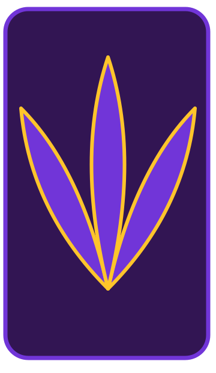
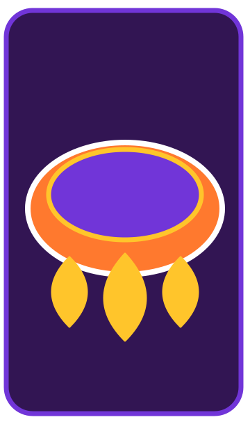
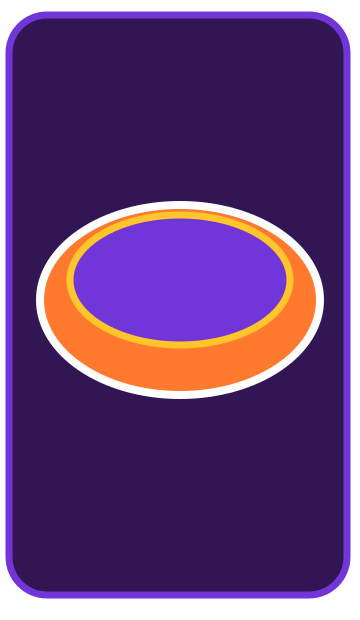

SABORES CON NOMBRE PROPIO
COCINA LOCAL
La gastronomía documentada de Tzompantepec incluye ingredientes del campo, sopas, quesadillas, legumbres, carnes y dulces que también se comparten con la región.


✳
INGREDIENTES DEL MAGUEY
GUSANOS BLANCOS Y ROJOS
La reseña gastronómica registra gusanos de maguey blancos y rojos, un ejemplo del aprovechamiento alimentario de productos relacionados con esta planta.


✳
UN REPERTORIO DE SOPAS
HONGOS, TORTILLA Y ELOTE
Las sopas de hongos, tortilla y elote aparecen en el compendio, junto con preparaciones de flor de calabaza, chícharo y nopales.


✳
DOS RELLENOS TRADICIONALES
FLOR Y HUITLACOCHE
La flor de calabaza y el huitlacoche se mencionan como rellenos de quesadillas, preparaciones compartidas con otras cocinas del centro de México.


✳
LAS LEGUMBRES EN LA MESA
TLATLAPAS Y HABAS
Las tlatlapas y el caldo de habas también forman parte del registro gastronómico municipal, ampliando la variedad de preparaciones de su cocina.


✳
LAS PREPARACIONES DE CARNE
CARNERO EN MIXIOTE
El compendio menciona barbacoa de carnero en mixiote, una preparación que forma parte del repertorio documentado para el municipio.


✳
OTRO PLATILLO REGISTRADO
POLLO A LA TOCATLÁN
El pollo a la tocatlán aparece junto a esas preparaciones. Conocer estos nombres permite reconocer la relación entre la cocina municipal y la regional.

✳
EL MOMENTO DE LO DULCE
MUÉGANOS CON PANELA
Los muéganos con panela y los buñuelos con miel de abeja se encuentran entre los postres descritos para Tzompantepec.


✳
FRUTAS Y CALABAZA
DULCES Y CONSERVAS
El dulce de calabaza y las conservas de frutas completan la descripción. Las recetas pueden cambiar entre familias y no son exclusivas del municipio.


✳
AHORA CUÉNTANOS TÚ
TE LEEMOS
¿Qué platillo de Tzompantepec recomendarías probar primero y quién lo prepara mejor? Comparte tu recomendación o una receta familiar en los comentarios.

✳